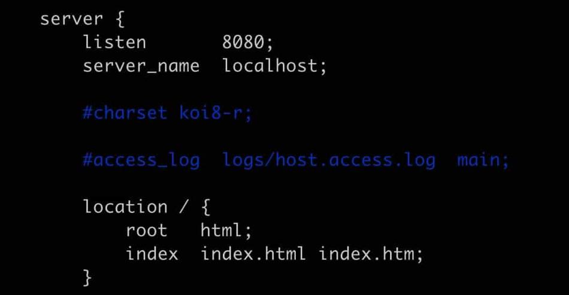
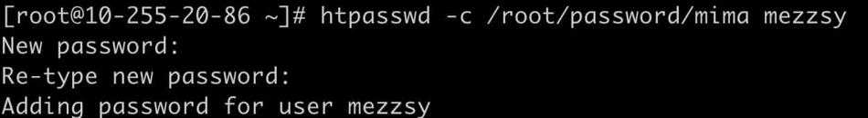

1. CentOS
1.1. git安装
# 安装
yum install -y git
# 查看版本
git version
配置用户
#全局设置git提交的用户名
git config --global user.name 'your_name'
#全局设置git提交的用户email
git config --global user.email 'your_email@domain.com'
1.2. 密钥生成
ssh-keygen -t rsa -b 4096 -C "your_email@example.com"
1.3. gitbook安装
需要先安装node.js
npm install gitbook-cli -g
首次安装会出现语法错误：
修改文件/root/node-v16.16.0/lib/node_modules/gitbook-cli/node_modules/npm/node_modules/graceful-fs/polifills.js
找到这个文件打开，找到
fs.stat = statFix(fs.stat)
fs.fstat = statFix(fs.fstat)
fs.lstat = statFix(fs.lstat)
注释掉这三个调用
1.3.1. gitbook和nginx关联
修改配置文件：
vim /usr/local/nginx/conf/nginx.conf
server {
listen 4000; #nginx监听的端口
server_name 117.51.142.225; #拦截的用户访问路径
# 访问本地绝对路径下的静态html
location / {
root /root/EffectiveBlog/_book; #gitbook build 生成的文件
index index.html index.htm;
}
}
1.4. 搭建nginx
1.4.1. 创建文件夹
mkdir nginx
cd nginx
1.4.2. 下载并解压
wget http://nginx.org/download/nginx-1.19.2.tar.gz
tar -zxvf nginx-1.19.2.tar.gz
1.4.3. 安装nginx依赖包
yum -y install gcc zlib zlib-devel pcre-devel openssl openssl-devel
1.4.4. 安装nginx
进入nginx目录：
cd /root/nginx/nginx-1.19.2
执行命令：
./configure
执行编译命令：
make
执行安装命令：
make install
安装完，nginx在/usr/local/nginx下
1.4.5. 配置nginx
vim /usr/local/nginx/conf/nginx.conf

端口改为8080，最好不要占用默认的80端口。
1.4.6. 配置环境变量
ln -s /usr/local/nginx/sbin/nginx /usr/local/bin/
/usr/local/bin/就是环境变量目录
1.4.7. 启动nginx
启动：
nginx
查看 nginx 进程：
ps -ef | grep nginx
1.4.8. 登录权限认证
安装htpassed工具
通过yum安装
yum -y install httpd-tools
设置用户名和密码，并把用户名、密码保存到指定文件中：
htpasswd -c [passwfile] [username]

修改nginx配置文件
vim /usr/local/nginx/conf/nginx.conf
server {
listen 4000; #nginx监听的端口
server_name 117.51.142.225; #拦截的用户访问路径
# 访问本地绝对路径下的静态html
location / {
root /root/EffectiveBlog/_book; #gitbook build 生成的文件
index index.html index.htm;
}
#新增下面两行
auth_basic "请输入密码"; #这里是验证时的提示信息
auth_basic_user_file /root/password/mima;
}
1.4.9. 遇到的问题
8080端口不生效
如果端口不生效，可能是云服务器拦截了，设置安全组：
没有读取文件的权限
将nginx.config的user改为和启动用户一致：

启动Nginx时候报错
https://blog.csdn.net/weixin_45525272/article/details/107980445
1.5. node.js安装
// 压缩包
wget https://nodejs.org/dist/v16.16.0/node-v16.16.0-linux-x64.tar.xz
1.6. screen安装
yum install screen
2. Mac
2.1. oh my zsh
2.1.1. 安装
sh -c "$(curl -fsSL https://raw.githubusercontent.com/ohmyzsh/ohmyzsh/master/tools/install.sh)"
3. Docker+Gitbook
创建空的容器
# 运行一个带有端口映射的容器（将容器内的 80 端口映射到主机的 8080 端口）
docker run -it -p 8080:80 nginx